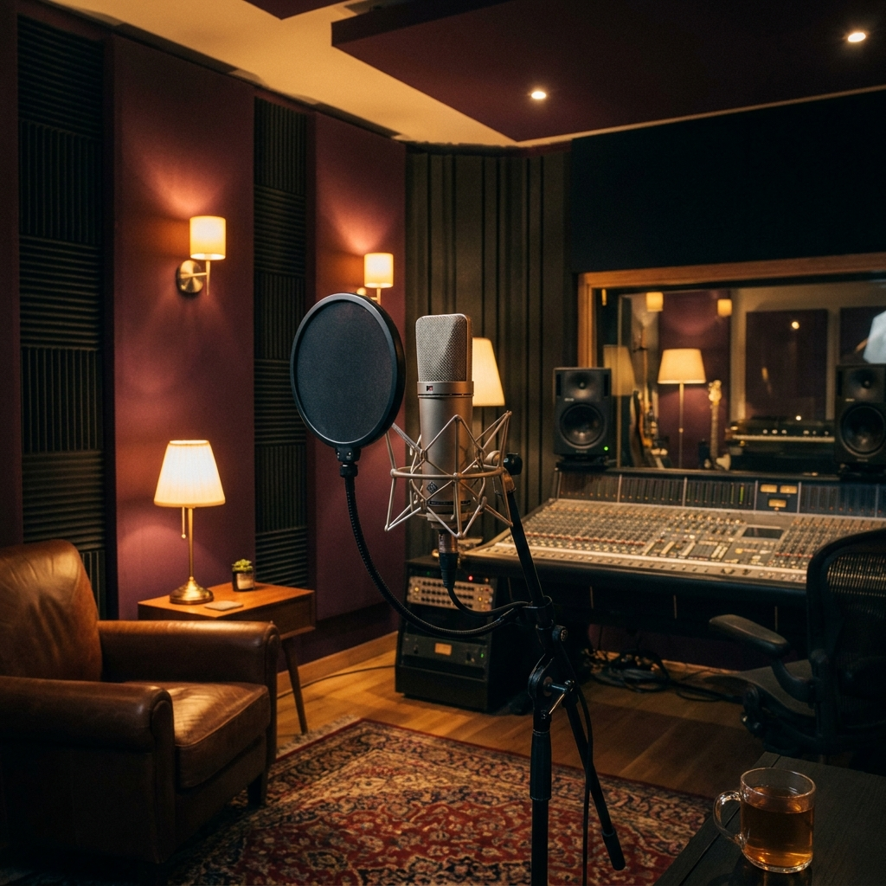

🎲
±랜덤
코노 점수는 실력을 말하지 않습니다
최저 점수 업장 조정, 성량·박자 편향 — 95점도 실제 피치는 반만 맞을 수 있습니다.
코인 노래방을 내 보컬 스튜디오로. 녹음만 하면, 원곡 대비 피치와 지난 연습 대비 성장을 자동 분석합니다.
최저 점수 업장 조정, 성량·박자 편향 — 95점도 실제 피치는 반만 맞을 수 있습니다.

리버브에 가려진 진짜 음정, 들리는 순간엔 이미 지나갔습니다.

매일 연습 루틴엔 비현실적. 캐주얼 싱어에겐 너무 높은 문턱입니다.

녹음·분석·비교를 자동으로 처리해, 연습이 그대로 내 성장 기록이 되게 합니다.
내 녹음을 원곡과 비교해, 구간별로 어디가 몇 센트 플랫·샤프인지 한눈에 보여드립니다.
지난 연습과 이번 연습을 나란히 들으며, 성장한 구간을 소리와 숫자로 확인합니다.
연습이 쌓일수록 롱톤 안정성·음역·피치 정확도가 그래프로 누적됩니다.
유튜브 원곡 URL과 내 녹음을 올리면, 로컬 백엔드가 점수와 연습 피드백을 반환합니다.
녹음 파일을 업로드한 뒤 원곡 유튜브 링크를 확인하고 분석을 시작하세요.
Selected audio appears here.